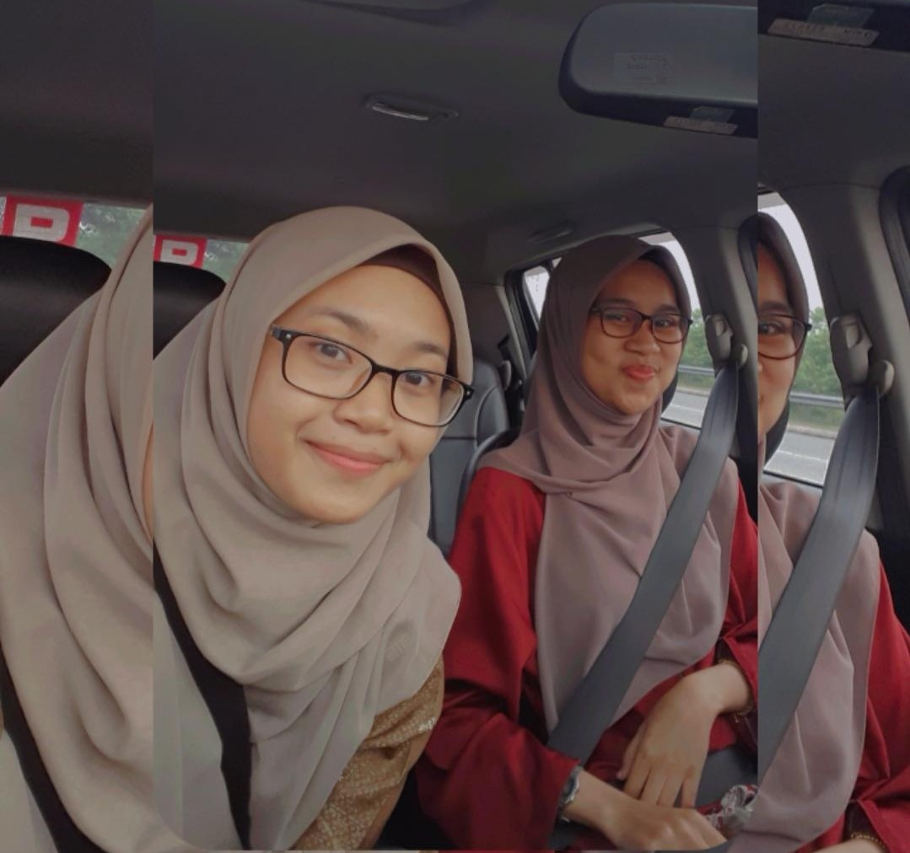
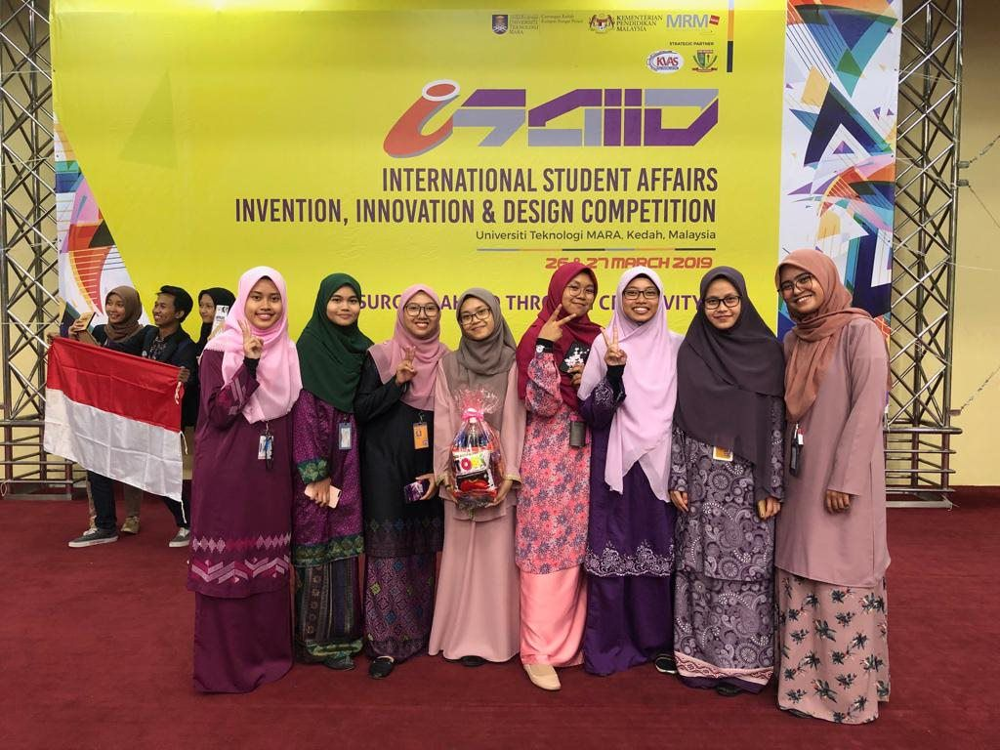

| Experience 1 | Experience 2 | Experience 3 |
Experience 1: Solar Cooking Competition |

The first experience that I would like to share with you guys is the solar cooking competition that I joined during high school.
The competition was organised by my Science teacher, Mrs. Mariam Omar. It is a science experiment competition which student required
to use their creativity to heat the water by using solar only. We weren’t allowed to heat the water using fire stove or what so ever.
Team that has the highest temperature of water will be announced as the winner of this competition. We need to form a group consist
of 3 person only and I’m group with my friends, Izzah and Firzani. We joined this competition because we feel that it is very interesting
and we also love Science! During the competition, my team decided to create a bowl using aluminium foil and we put it inside a black box and
it was covered by a transparent plastic which at the top of it, we put magnifying glass. We put the box under the direct sunlight.
We were given 1 hour to heat the water and after that the judges will come and check the temperature. Guess what? Our team won the first place
since we managed to get the highest temperature. It was very unexpected and we were so happy! ;)

(Seri, Mrs. Norhayati, Me)
My second experience that I would love to share is about my internship! During my diploma, students are compulsory to go through
industrial training for 6 weeks during semester 3. As I’m taking Diploma in Library Management, I need to do my internship at any libraries in
Malaysia so I chose library in Polytechnic Shah Alam, Selangor so called Ibnu Khaldun library as it near to my house.
My internship experience was really fun since I have my friend, Seri doing internship together at the same place with me.
We also went to work together everyday. There are so many things that I learned during my internship such as we get to experience
the real working environment, improving my communication skills with the customers and learned to do office works.
Even though it is only 6 weeks, but I can say that I have gained many experiences and knowledge there. All the staffs over there are
very kind and they accept me just the way I am. The woman at the middle in the picture is the chief librarian of this library, Mrs. Norhayati.
She is very soft and kind hearted person. She also very care about all of her staffs.

This is my internship's friends, Seri.

One of experience that I will never forget is when I joined innovation competition named ISAIID during my Diploma in UiTM Kedah.
ISAIID is stand for International Student Affairs Invention, Innovation and Design Competition. It was a great experience to be in this team
where we work so hard to win the competition. However, the competitors are from all over the country and it was very competitive competition but my
team managed to get bronzer! :) Eventhough it is just bronzer, but we still felt that our hard work paid off.

This is a picture of my teammates!


Here are some pictures of us with International Students from Thailand and Indonesia that also joined the competition.


-This website is develop for IMS456(Basic Web Design and Content Management). Any information or material are used for educational purpose only.-